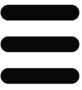
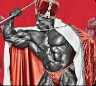
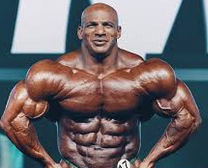
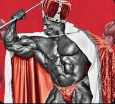
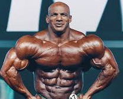

Home
 User
User
Message-Smile
Bell
Bars
Circle-Info
Gear
Create a website as a journal containing four sections (Header, Left, Centre, Footer) using Grid
Write your website name in the Header.
Make the Left section vertically across the page and embed seven icons inside it (Home, User, Message-Smile, Bell, Bars, Circle-Info, Gear).
In the Centre section, use 10 photos and organize them using flex-wrap: wrap;, set the height to auto (height: auto;), and the width between 150px - 300px.
In the Footer, write the author as:
"2025 by tsNeem. All rights reserved."
Don't forget to add a background to the site and use font properties
 


